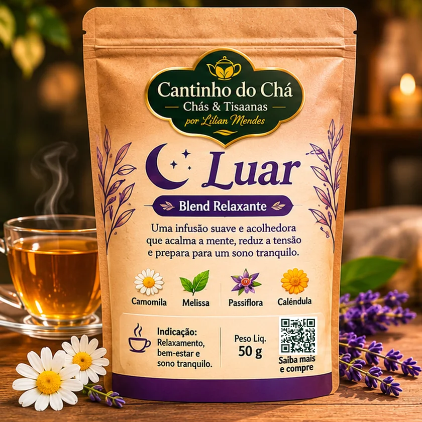
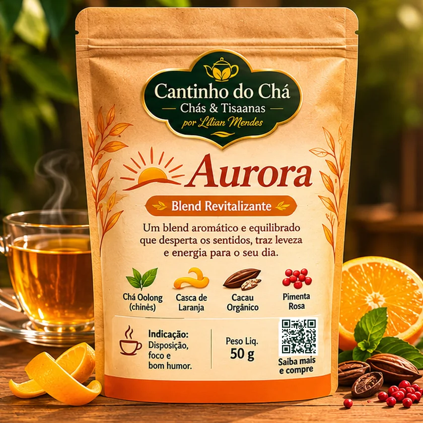
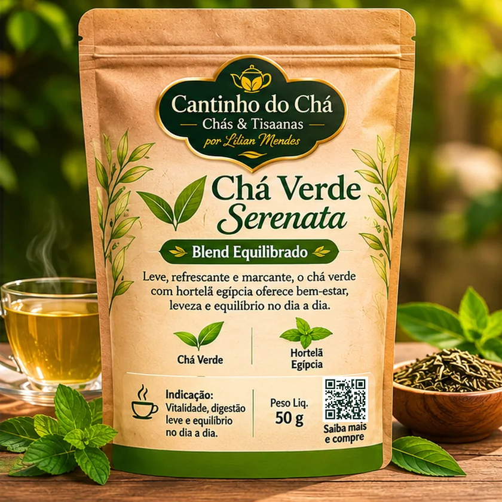
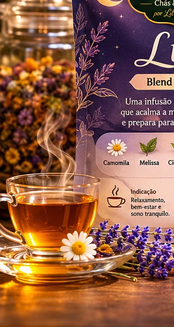
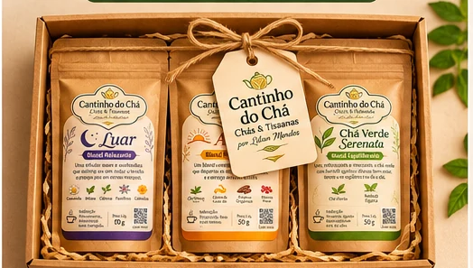

01 / O ACOLHIMENTO☾

TISANA BOTÂNICA
Luar☾
Um abraço em forma de infusão. Flores e ervas de perfil suave para acompanhar o seu momento de desacelerar.
FloralSuaveAconchegante
O tempo desacelera. O aroma preenche o ar. E uma simples xícara se transforma em um momento só seu.
Três criações, três atmosferas. Blends com personalidade própria, escolhidos para acompanhar os diferentes ritmos do seu dia.

Um abraço em forma de infusão. Flores e ervas de perfil suave para acompanhar o seu momento de desacelerar.

Um amanhecer para os sentidos. Notas cítricas e envolventes que transformam a primeira pausa do dia.

Leve como uma brisa, delicado como um respiro. Chá verde e hortelã egípcia em uma união refrescante.
Embalagens ilustrativas. Composição, peso e disponibilidade confirmados no atendimento.

Essa história tem nome: Lilian Mendes.
Há mais de 15 anos, Lilian transforma a paixão pelos chás em experiências para compartilhar. Entre descobertas, aromas e combinações delicadas, nasceu a essência do Cantinho do Chá.
Hoje, essa trajetória ganha uma nova apresentação: a mesma dedicação de sempre, em uma marca criada para celebrar os pequenos rituais do cotidiano.
Uma xícara quente nas mãos, o perfume das ervas no ar e alguns minutos dedicados apenas ao que importa.
Conheça nossos rituais ↗Um amanhecer tranquilo, uma pausa no meio do dia ou o aconchego do entardecer.
Observe as cores, sinta os aromas e respeite o tempo de infusão indicado no produto.
Desacelere por alguns instantes. O detalhe mais importante desse ritual é estar presente.
Três momentos reunidos em uma única coleção: a suavidade do Luar, o encanto da Aurora e a leveza do Chá Verde Serenata.
Conceito de presente. Montagem e disponibilidade sob consulta.

TRÊS SABORES. INFINITAS FORMAS DE CARINHO.A Lilian pode ajudar você a descobrir qual blend combina com o seu momento.
Falar com a Lilian ↗Toque em “Pedir pelo WhatsApp” no seu chá preferido. Você poderá confirmar preço, disponibilidade e entrega diretamente no atendimento.
Alguns blends também ficam ótimos gelados. Consulte o modo de preparo indicado e peça sugestões à Lilian.
Existe uma proposta de kit “Três Rituais”. Consulte pelo WhatsApp as opções disponíveis de montagem e embalagem.
Na vitrine, toque em “Conhecer o blend” para ver a composição de referência. A informação definitiva deve ser confirmada no rótulo do produto.